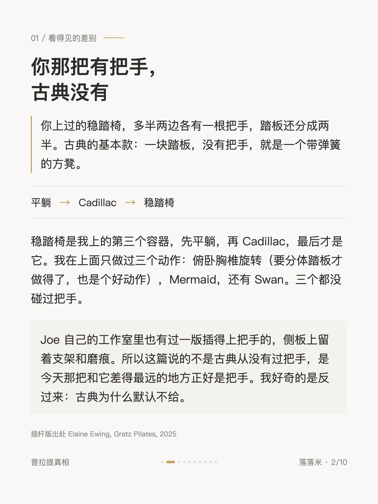
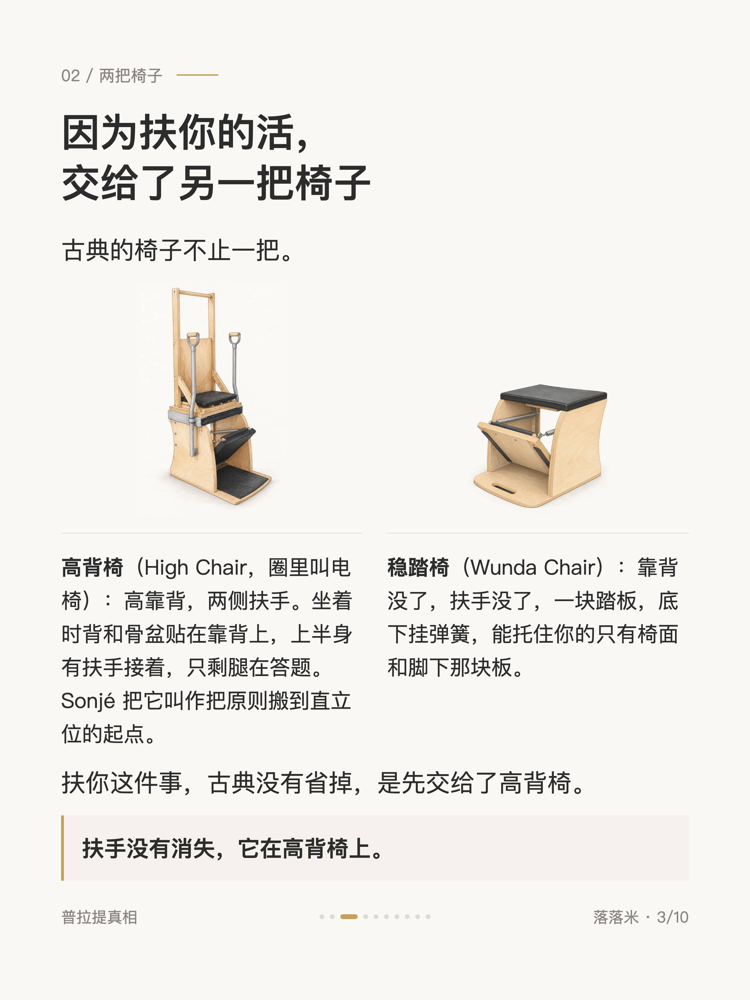
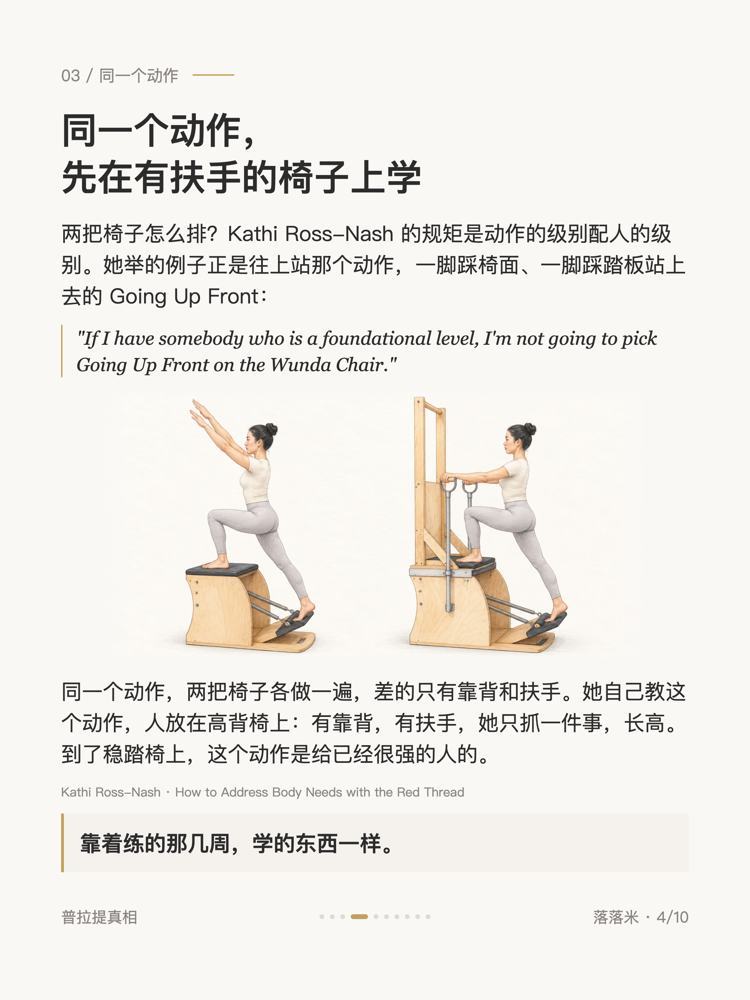
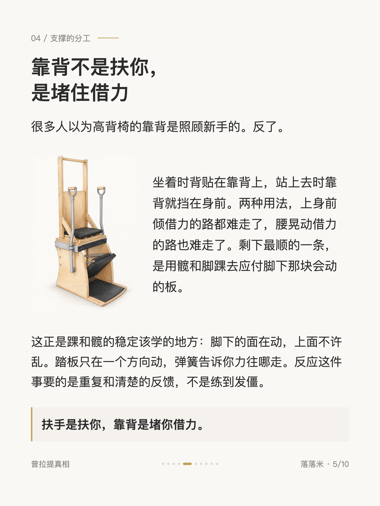
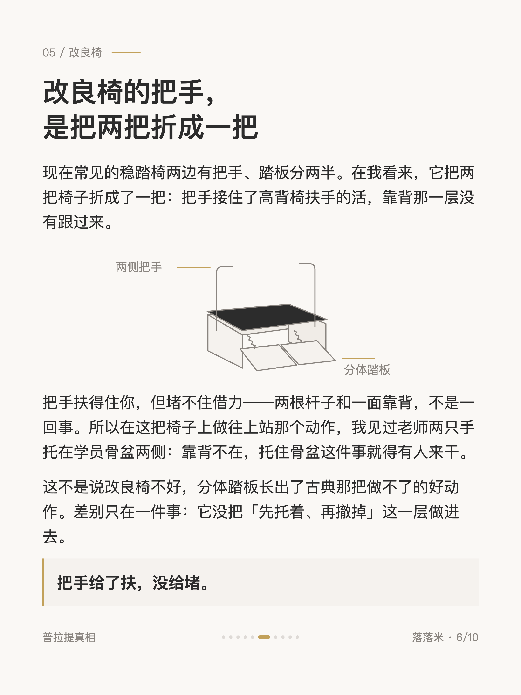
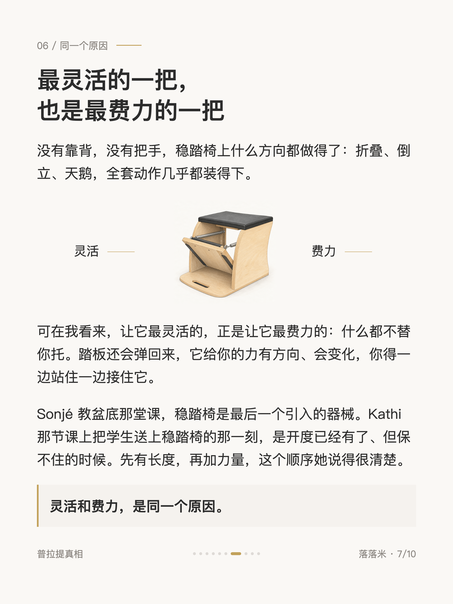
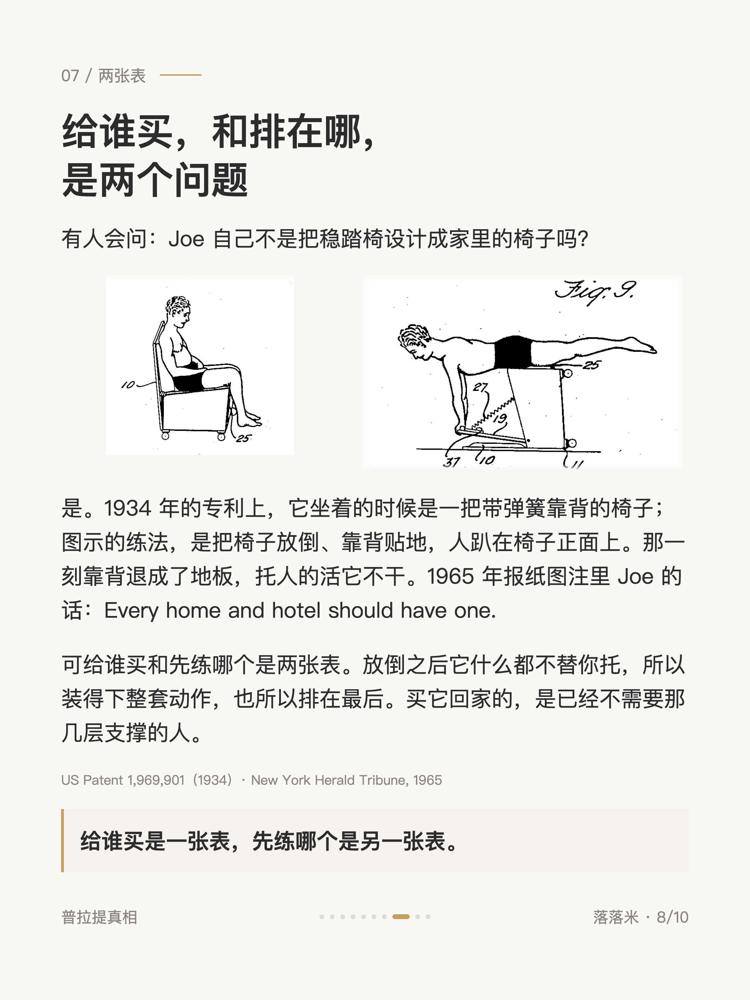
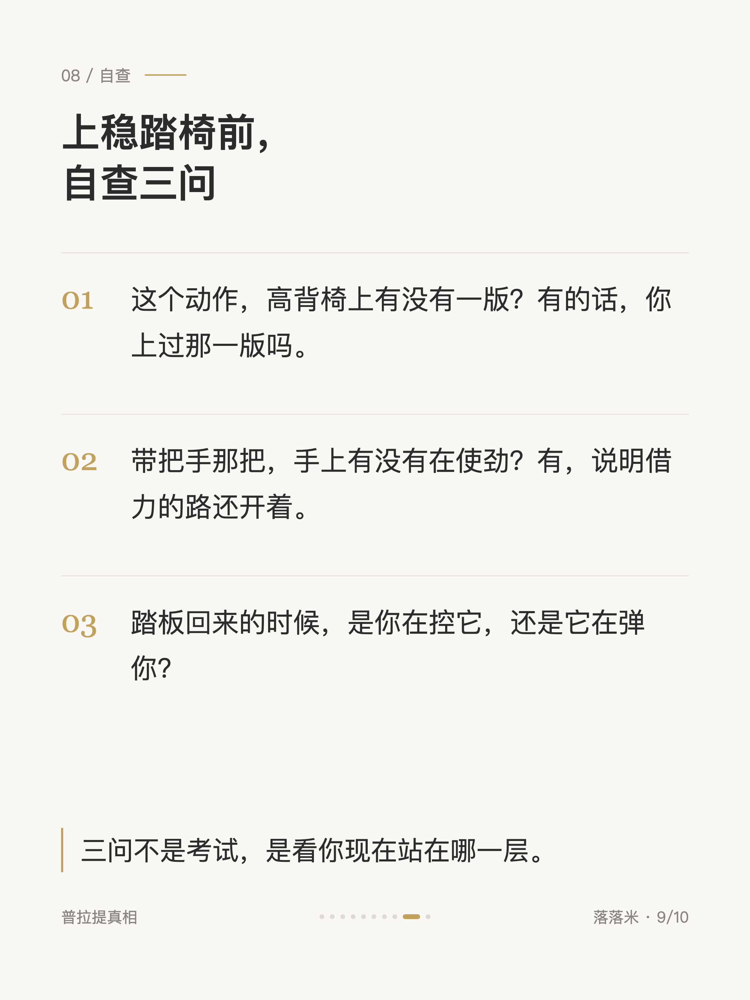
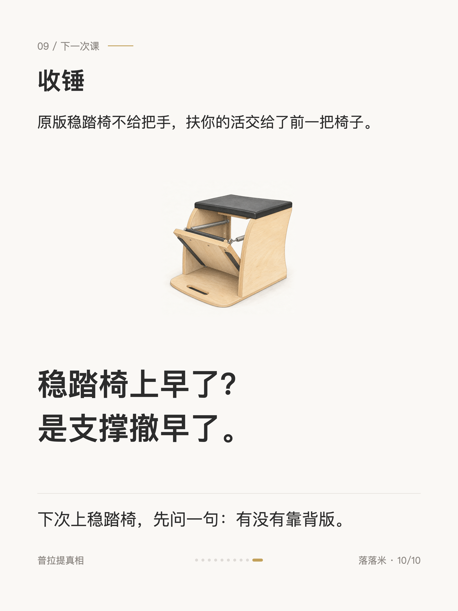

普拉提真相 #014
普拉提稳踏椅，原版为什么没有把手

1 / 10

2 / 10

3 / 10

4 / 10

5 / 10

6 / 10

7 / 10

8 / 10

9 / 10

10 / 10
← 左右滑动浏览全部卡片 →
稳踏椅是我最后才上的器械。写这篇是因为一个反过来的问题：常见的稳踏椅两边都有把手，原版那把为什么没有。
答案是古典的椅子不止一把。高背椅有靠背有扶手，扶你的活它干；稳踏椅是把这些全撤掉之后剩下的那把，在我看来这正是它最灵活也最费力的原因：什么动作都装得下，什么都不替你托。带把手的改良椅处在中间：扶得住你，堵不住借力。卡片里有两把椅怎么排、靠背到底在堵什么，还有上稳踏椅前的三问。